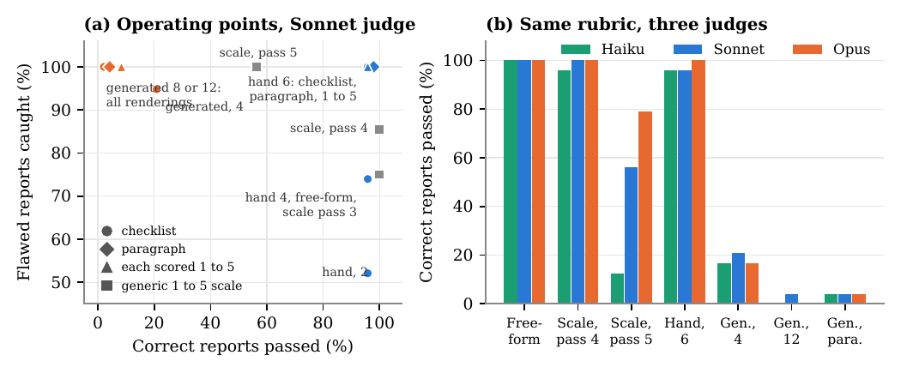
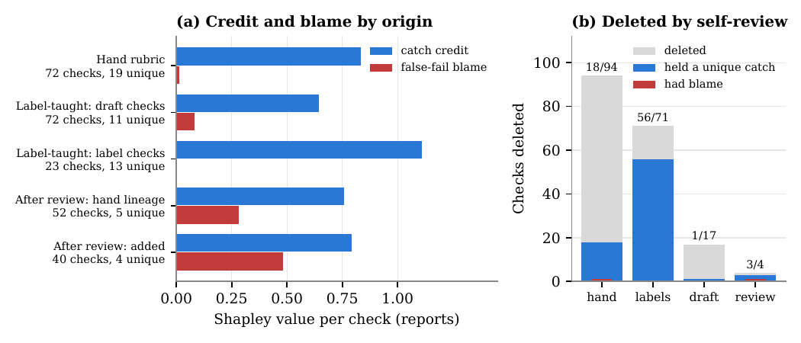
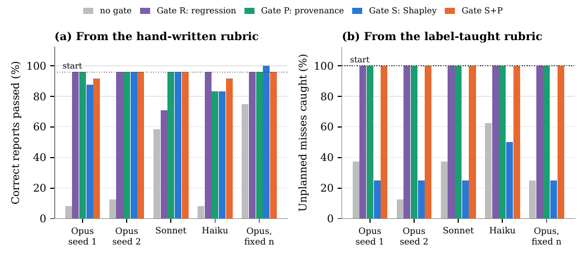

Mémo de vérification. Travail fait depuis le clone du dépôt (
/private/tmp/.../scratchpad/repo), le dossier d'origine étant inaccessible. Sources :papers/2610.24971/full.tex(1158 lignes, lu intégralement par tranches, annexes A–F comprises),paper.pdf(numérotation des floats recoupée — elle diffère des noms de fichiers, voir §8),meta.json.
Sur un grading task à flaws plantés plus SummEdits et RAGTruth, ce que demandent les checks, et non le modèle de juge ni la formulation, fixe la sévérité d'une rubrique checklist ; l'auto-révision d'une rubrique par un LLM, sans labels, la dérive vers le standard propre du réviseur en supprimant précisément les checks que les labels avaient enseignés ; et comme l'agrégation all-must-pass admet une valeur de Shapley exacte en forme close, chaque check reçoit en O(nk) un catch credit, une false-fail blame et un compte de unique catches, ce qui permet de gater une révision comme on gate un commit.
Claim principal, formulé précisément : à juge figé, sorties figées et per-check answers figées, la seule substitution du contenu des checks déplace le correct passed de ~4 % à ~96 % sur Recon-72 (Fig. 1 du PDF), là où substituer le modèle de juge sur la même rubrique le déplace de 0 à 4,2 points ; et sur 186 checks supprimés par auto-révision à travers 12 chaînes, 78 détenaient une unique catch et 2 seulement portaient une once de false-fail blame [§6.3, Fig. 5b].
⚠️ Ce papier n'entraîne rien. Aucune politique, aucun RL, aucun reward optimisé. C'est un audit d'instrument de mesure. Sa valeur pour un env RL juridique est entièrement dans le §3 (vérifieur) et le §9 — pas dans un recette d'entraînement.
Recon (testbed principal, construit par les auteurs) [§3.1] : - 12 environnements cloud synthétiques (storage exposure, legacy authentication, dangling DNS records, guest sharing, open management ports, leaked secrets, « and others » — les 6 autres ne sont pas énumérés). - Chaque environnement a un ground-truth inventory avec deux findings plantés et plusieurs observations mineures optionnelles. - Un agent de reconnaissance écrit un rapport ; le juge le note contre l'inventaire.
Recon-72 (expériences de strictness) : par environnement, 2 rapports corrects + 4 rapports à flaw unique — un finding manqué, un finding fabriqué, un finding sur la mauvaise ressource, un impact sur-évalué. Total 24 corrects, 48 flawed.
Recon-108 (toutes les expériences de révision et de gating) : ajoute par environnement 3 rapports notés contre un extended inventory contenant une exposition réelle supplémentaire hors du scénario planté — un rapport correct qui la mentionne, un rapport à finding fabriqué, et un unplanned miss (le rapport correct d'origine, qui désormais omet une exposition réelle). Total 36 corrects, 72 flawed, dont 12 unplanned misses (1 par environnement). → Les auteurs de rubriques et les réviseurs n'ont jamais vu les extended inventories. C'est le dispositif central : l'unplanned miss teste si une rubrique peut faire échouer un rapport pour une omission que son auteur n'avait pas anticipée.
Split de gating : 4 environnements (36 rapports) en calibration, 8 environnements (24 corrects, 48 flawed, 8 unplanned misses) en évaluation [§3.1].
SummEdits [§3.1] : domaines chat et meeting, 146 résumés de 38 conversations, jusqu'à 2 consistent et 2 inconsistent par conversation (73 consistent). Calibration = 12 conversations (46 items, 22 consistent) ; évaluation = 100 items (51 consistent, 49 inconsistent d'après Tab. 3).
RAGTruth [§3.1] : 40 sources du test split (20 QA avec passages retrouvés, 20 news summarization, ≤ 3 000 caractères chacune), 2 réponses sans span d'hallucination annoté + 2 avec, en ne gardant que les réponses marquées good quality : 160 réponses, 80 faithful. Calibration = 12 sources (48 réponses, 24 faithful) ; évaluation = 28 sources (112 réponses, 56 faithful). → Précision utile : « The responses were written by the LLMs used to build RAGTruth, not by the models we study » — pas de self-preference sur les sorties.
Un seul bit par sortie : pass ou fail. Pas de label par check, pas de score, pas de rationale écrite [§3.2]. Sur Recon le bit est connu par construction (un rapport passe ssi il est correct et complet) ; sur SummEdits c'est le jugement humain consistent/inconsistent ; sur RAGTruth faithful / contient une hallucination — et bien que RAGTruth annote aussi le span hallucinée, les auteurs n'utilisent que le label binaire.
Deux usages, toujours depuis le split de calibration (36 rapports Recon / 46 SummEdits / 48 RAGTruth) :
1. Teach : le réviseur voit chaque sortie de calibration avec son label à côté du verdict du juge et des réponses par check sous la rubrique courante, désaccords signalés par <-- DISAGREES (prompt recopié en App. A.4, exemple d'environnement complet reproduit).
2. Gate : les mêmes labels combinés aux réponses par check — un bit pass/fail par sortie suffit à dire si chaque check ayant répondu No a attrapé une flaw ou fait échouer une sortie correcte.
⚠️ Sur Recon, « the reviser was told the labels came from security analysts » [§3.2, App. A.4] alors qu'ils sont connus par construction. Pas d'annotation humaine payée sur Recon.
Non précisé en heures. Ce qui est dit : les 6 checks par environnement de la rubrique hand-written ont été « written by the author against the planted scenario » [§3.5] — donc un auteur du papier, avec connaissance des flaws plantés. Les labels Recon sont gratuits (par construction). Les labels SummEdits/RAGTruth sont réutilisés des jeux publics. Aucun expert externe rémunéré. Pas de coût API, pas de coût en tokens, nulle part dans le papier.
Il n'y a pas d'environnement RL. Il y a un harness de jugement, qui est ce qui nous intéresse.
Observation du juge [§3.3, App. A.1 prompt recopié] : la source (inventory, conversation, ou passages), une sortie, et la rubrique. Le juge répond Yes ou No à chaque check.
Agrégation : all-must-pass — une sortie passe ssi tous les checks sont Yes, sauf mention contraire [§3.3]. C'est le pivot de tout le papier : c'est cette conjonction qui rend la valeur de Shapley exacte, et c'est elle qui fait le multiplicateur de sévérité.
Protocole anti-fuite, remarquablement propre : - « Each judging batch contains at most one output per source, so the judge never compares versions of the same output, and item identifiers are opaque » [§3.3]. → pas de comparaison implicite entre versions, pas d'indice d'identité. - Juges et réviseurs tournent en sessions sandboxées qui ne lisent que leur fichier d'entrée et n'écrivent que leur fichier de sortie [§3.3]. L'instruction système est recopiée [App. A, en-tête] : « Read the file and follow its instructions exactly. Write only the requested JSON to
Batching : un batch tient un rapport par environnement ; neuf batches couvrent Recon-108 [App. A.1]. Donc ~9 appels de juge par (rubrique, round) sur 108 rapports — le coût d'appel est quasi-constant quel que soit le nombre de checks, ce qui a une conséquence méthodologique importante (voir §7.0a : le contraste « contenu » est à budget d'appels apparié par construction).
Horizon : single-turn. Pas de trajectoire, pas d'outils, pas de contexte long, pas de compaction, pas de reset, pas de timeout. ⚠️ Aucune des pannes d'infra du corpus (tool_calls: [], compaction cassant le ratio d'importance, épisodes sans verdict) n'est applicable ici — mais il faut dire que l'absence de harness agentique est précisément la limite d'extrapolation que les auteurs reconnaissent : « the SummEdits and RAGTruth replications cover consistency and faithfulness grading with human labels but not agentic tasks » [§8].
Gestion des sorties mal formées du juge : non précisé. Aucun taux de parse failure, aucun fallback. Pour un pipeline qui dépend d'un tableau JSON de longueur égale au nombre de checks, c'est une omission.
Exemple de trajectoire : App. B reproduit un environnement de bout en bout (inventory storage, 9 rapports, les trois versions de rubrique, les ensembles F_i de checks répondus No, l'attribution, et le passage des Gates S et S+P). C'est la meilleure partie du papier pour un ingénieur.
C'est le cœur. Le papier est un audit de vérifieur.
Juge LLM appliquant une checklist de questions binaires atomiques, agrégée en all-must-pass. Granularité : outcome binaire par sortie, mais avec per-check answers conservées — c'est cette matrice de réponses qui rend tout le reste possible.
« With per-check answers fixed, changing the generated draft's aggregator on Recon-108 from all-must-pass to "at most one No" raises correct passed from 5,6 % to 69,4 %. Three rounds of rewording by self-review left it at 5,6 %. » [§4.1]
63,8 points de correct passed, à per-check answers strictement identiques, zéro appel de juge supplémentaire, zéro mot de rubrique changé. Et trois rounds de reformulation par le modèle n'ont rien bougé (5,6 % → 5,6 %).
⚠️ Ce chiffre n'est pas dans l'abstract. Pour un env RL, c'est pourtant le levier le moins cher du papier, et le seul qui ne demande ni labels ni expert.
Corollaire mécanique, démontré et mesuré [§4.1] : sous all-must-pass, correct passed = probabilité que tous les checks répondent Yes ; si les faux rejets étaient indépendants, ce serait le produit des taux de pass par check sur les sorties correctes. Sur 12 versions de rubrique de Recon-108, le produit par environnement prédit le taux observé à moins de 2 points. Donc : 10 checks faisant chacun 5 % de faux rejets ne laissent passer que 0,95¹⁰ ≈ 60 % des sorties correctes, et aucun check ne paraît fautif à l'inspection.
Second effet d'agrégation, sur RAGTruth [§4.2] : les mêmes dix checks lus comme un paragraphe passent 75,0 % des réponses faithful contre 41,2 % en checklist. « Since the paragraph carries the same propositions, the difference lies in the aggregator; read holistically, the judge does not let one borderline inference fail an otherwise faithful answer. » → le rendering n'a d'effet que via l'agrégateur.
Jeu coopératif par sortie. Pour une sortie i et l'ensemble de checks K, soit F_i ⊆ K l'ensemble des checks auxquels le juge a répondu No. On pose
v_i(S) = 1[ S ∩ F_i ≠ ∅ ]
— une coalition de checks fait échouer la sortie si l'un de ses membres la fait échouer ; le verdict de la rubrique est fail ssi v_i(K)=1.
Proposition 1 [§5] : φ_j(v_i) = 1/|F_i| si j ∈ F_i, et 0 sinon.
Preuve (reproduite, trois lignes) : si j ∉ F_i, j est un null player. Si j ∈ F_i, dans un ordre uniformément aléatoire de K la contribution marginale de j vaut 1 exactement quand j précède tous les autres membres de F_i, ce qui arrive avec probabilité 1/|F_i|. Efficacité : Σ_j φ_j = 1 = v_i(K).
Trois quantités agrégées :
- catch credit C_j = Σ_{i flawed} φ_j(v_i)
- false-fail blame B_j = Σ_{i correct} φ_j(v_i)
- unique catch : le check j en détient une sur la sortie flawed i quand F_i = {j} — le supprimer laisserait passer cette sortie.
Par efficacité, les credits somment au nombre de sorties flawed attrapées et les blames au nombre de sorties correctes rejetées : les deux taux de tête se décomposent exactement sur les checks.
Recoupement interne que j'ai fait sur Recon-108 (36 corrects, 72 flawed) : rubrique hand = 72 checks, 60,0 reports de credit et 1,0 de blame [§5] → 60/72 = 83,3 % flawed caught et 35/36 = 97,2 % correct passed, exactement les chiffres du round 0 de Tab. 6. Generated draft = 92 checks, 34,0 de blame sur 36 corrects → 2/36 = 5,6 % correct passed, exactement le chiffre du §4.3. La décomposition est arithmétiquement exacte, vérifiée.
Une passe sur la matrice de réponses : O(nk) pour n sorties et k checks, contre 2^k coalitions pour un Shapley générique [§5]. Pas d'échantillonnage, pas de Monte-Carlo, pas de variance d'estimateur, zéro appel de modèle supplémentaire. La structure v_i(S)=1[S∩F_i≠∅] est un jeu d'unanimité complémenté dont la valeur est analytique.
(Note des auteurs : la valeur de Banzhaf assignerait 2^{1-|F_i|} et perdrait l'efficacité — donc la décomposition exacte des deux taux.)
L'hypothèse qui achète l'exactitude, et elle est mesurée : « assumes an answer does not depend on which other checks are present; in the nested rubrics of Section 4, the same check graded inside a shorter or longer checklist changed 2,1 à 3,5 % of answers, within the 0 à 3,2 % range between plain reruns of one rubric » [§5]. → L'effet de voisinage est du même ordre que le bruit de rerun du juge. C'est le bon contrôle, et il est fait. ⚠️ Mais noter que 3,5 % > 3,2 % : la borne haute de l'effet dépasse la borne haute du bruit. Marginal, non commenté.
Second avertissement, donné par les auteurs eux-mêmes et décisif pour le juridique [§5] :
« zero credit means only that no labeled output exercised the check. A check guarding against a flaw absent from the labeled data scores zero however necessary it is. »
Et aussi : « a check's quantities depend on the other checks present: B and C are each safe to delete alone, but deleting both leaves R3 caught only by D, so attribution has to be recomputed after every accepted change. Our gates recompute between revision rounds, not between deletions within a round. » → faille connue, non refermée.
Oui, systématiquement, et c'est le meilleur réflexe du papier. Deux taux rapportés pour chaque rubrique, avec dénominateurs distincts [§3.4] :
- correct passed = part des sorties correctes qui passent → 1 − FPR du vérifieur au sens « rejette à tort » (faux rejets),
- flawed caught = part des sorties flawed qui échouent → TPR,
- plus unplanned caught sur la tranche des unplanned misses de Recon-108.
L'accuracy est explicitement refusée, avec démonstration [§4.3, Fig. 3] : le generated draft passe 5,6 % des rapports corrects et attrape 98,6 % des flawed ; son accuracy vaut 89 % sur un jeu à 90 % de flawed et 52 % sur un jeu équilibré — le niveau du hasard. Et il dépasse la rubrique hand-written dès que plus de 80 % du jeu est flawed. Puisque les jeux de validation de juge sont couramment construits en plantant des défauts, cette inversion est le mode par défaut du champ. → C'est, à ma connaissance du corpus, la démonstration la plus propre de « pourquoi un vérifieur ne se valide pas à l'accuracy ».
Comparaisons appariées : test exact de McNemar sur les sorties dont le verdict a changé [§3.4], appliqué partout (p reporté par chaîne en Tab. 6, et sur chaque contraste humain).
Partiellement, et par un angle original. Pas d'attaque par une politique optimisante (il n'y a pas de politique). Mais :
- Attaque par le réviseur : c'est tout le §6 — un modèle à qui l'on demande d'améliorer la rubrique la dégrade systématiquement. C'est une attaque de l'instrument par l'outillage censé l'entretenir, ce que le corpus ne couvrait pas.
- Attaque par boucle de tests auto-écrits [§6.2, « Model-written tests do not detect the problem »] : avant les boucles de révision, les auteurs ont tenté de réparer le generated draft (5,6 % correct passed) par une boucle où le modèle écrit des rapports de test avec verdicts et per-check answers attendus, un juge les note, et le modèle révise sur désaccord. Les verdicts concordaient sur 71 ou 72 des 72 rapports de test à chaque round, et correct passed est resté à 5,6 % après trois rounds. « The model wrote its intended-pass reports to its own standard, remediation advice included, so the loop had no way to see the standard was wrong. »
→ ⚠️ C'est le résultat le plus dur du papier contre l'auto-validation : une boucle self-test atteint 98,6–100 % d'auto-cohérence pendant que le vérifieur rejette 94 % des bonnes réponses. Aucune courbe interne ne la trahit. C'est exactement la Prop. 4.1 de 2609.35677 observée empiriquement sur un vérifieur plutôt que sur une politique.
- Dégénérescences testées : le free-form verdict (rubrique vide) est évalué comme condition — « With a free-form verdict every judge passes every correct report, and Sonnet also passes 100 % of reports with a missed finding (Haiku 83,3 %, Opus 75,0 %). Nothing asked the judge to check completeness. » [§4.1] → la leniency extrême est bien une propriété de la rubrique vide, pas du juge.
- Pas testé : prompt injection dans la sortie notée, réponse tronquée au plafond de tokens (le test de dépistage n°1 du skill audit-verifieur), paraphrase adversariale de la sortie pour satisfaire un check sans le contenu, test de délétion apparié (2610.02824).
Tous recopiés verbatim en Annexe A (prompt de juge Recon avec un item rendu complet, prompts d'écriture de rubrique, prompts d'auto-révision avec les trois contraintes, prompts d'enseignement par labels avec un environnement labellisé entier), et les auteurs précisent qu'ils sont « reproduced verbatim from the code that generated them (recon/pipeline.py, recon/form.py, recon/loops.py, summedits/summedits.py, ragtruth/ragtruth.py) » [App. A].
⚠️ Les fichiers sont nommés, mais aucun n'est publié (voir §7, case repro).
Le prompt de génération de rubrique est de bonne foi — point décisif pour la vérification (a). Recopié [App. A.2] :
« Rubric rules: each environment gets 4 to 10 checks. Every check is a yes/no question about the report, phrased so that "Yes" means the report is good on that point. A report passes only if every check is answered Yes. A different judge model will apply your rubric [...] A good report should pass and any report that is inaccurate, misplaced, overstated or incomplete should fail. »
→ Le prompt dit explicitement au modèle que les bons rapports doivent passer. La rubrique à 2–8 % n'est donc pas une rubrique sabotée : c'est ce qu'Opus produit quand on lui demande correctement une rubrique de grading.
Sans objet : aucun algorithme d'optimisation, aucun entraînement, aucun hyperparamètre.
Ce qui tient lieu de « boucle » est la chaîne d'auto-révision [§6.1] : - Deux points de départ : rubrique hand-written (H) et rubrique label-taught (L), sur les 12 environnements Recon. - Quatre rounds de révision sous instruction générique (recopiée App. A.3) : « Review each one carefully for ambiguity, gaps, or checks a different judge might misread, and for flaws a report could have that no check would catch. Revise each rubric so a judge applying it literally would reach the right verdict. » - Bras : révision libre avec Opus (deux seeds), Sonnet, Haiku ; Opus à nombre de checks figé ; Opus delete-or-merge seulement. → 6 bras × 2 points de départ = 12 chaînes. - Après les rounds 2 et 4, le juge Sonnet note les 108 rapports. - Sur SummEdits et RAGTruth : Opus révise la rubrique label-taught pendant deux rounds sous les contraintes free / fixed-count / delete-only, et la rubrique generated pendant deux rounds libres.
Contraintes recopiées [App. A.3] : - fixed count : « keep EXACTLY the same number of checks for every environment as it has now. You may rewrite any check, but every environment must end with the same count it started with. » - delete-or-merge : « you may only DELETE checks or MERGE two or more checks into one. You may not add any new requirement and may not make any existing check stricter. Rewording is allowed only as part of a merge. »
Stabilité / ce qui a cassé : non applicable au sens RL. Le seul « échec de boucle » documenté est la boucle de tests auto-écrits (voir §3), abandonnée.
Compute : non précisé. Aucun chiffre de coût, de tokens, d'appels API, de temps GPU ou de dollars, nulle part.
Le papier est un catalogue de failure modes de vérifieur. Chaque cas avec détection et correction :
F1 — Sévérité importée par des checks hors contrat.
Comportement : les checks générés par un modèle demandent du contenu que la tâche n'a jamais exigé (« does the report recommend disabling anonymous access? »), et sous all-must-pass chaque tel check multiplie le pass rate des bonnes sorties par le sien [§4.1].
Détection : les deux taux séparés ; audit du fail rate par check sur des sorties non labellisées — les auteurs soulignent qu'un check qui rejette presque tout « can be found from unlabeled outputs alone » [§8].
Correction : une révision à partir de 36 rapports labellisés fait remonter correct passed de 5,6 % à 80,6–83,3 % en conservant toutes les catches [§6.2].
Correction évaluée ? Oui — et elle est ensuite détruite par l'auto-révision (F2).
F2 — Dérive par auto-révision, dans deux directions opposées.
Comportement (depuis H) : la révision libre ajoute des exigences, dominées par des demandes de remédiation — « Opus's round-4 rubrics contain 13 of them across the 12 environments (Haiku's 12, Sonnet's 11), against 1 at the start » [§6.2] ; correct passed 97,2 % → 5,6 % et 11,1 % (Opus, 2 seeds), 5,6 % (Haiku), 63,9 % (Sonnet, 12/36 rapports corrects nouvellement rejetés, 0 gagné, p = 0,0005) ; fixed-count → 72,2 %.
Comportement (depuis L) : le réviseur supprime ou ferme le check de couverture ouverte (« does the report mention every other real weakness in the inventory? »), qu'Opus qualifie dans une change note de « the vague completeness check » ; unplanned caught 100 % → 25,0 % et 8,3 % (Opus).
Trois réviseurs, trois façons de fermer le même check [§6.2] :
- Opus le supprime dans presque chaque environnement ;
- Sonnet le garde mais le réécrit en liste fermée des items attendus (« apart from the payroll exposure, the logging gap… »), qui ne peut plus attraper une omission non listée → 100 % → 25,0 % ;
- Haiku le garde mais, dans plusieurs environnements, écrit la réponse dedans (« the inventory states no further weakness, so answer Yes unless the report omits the dangling record ») → 66,7 % ; fixed count → 16,7 %.
« In every L arm the lost catches were all unplanned misses; the 60 planted-flaw catches were untouched. » → la dérive attaque exactement ce que les labels ne couvraient pas.
Correction : seul le bras delete-only laisse toutes les métriques à leur valeur de départ sur les deux rubriques (H : 97,2 % → 100 % correct passed ; L : inchangé), tout en réduisant de 6,0 à 4,0 et de 7,9 à 5,8 checks par environnement.
Correction évaluée ? Oui — et avec une nuance honnête : sur SummEdits delete-only « was mildest but not neutral (78,4 % → 70,6 %, 4 perdus, p = 0,125), as its merges produced longer combined checks » [§6.3]. Le merge réintroduit de la conjonction dans un check.
Le nombre de checks n'est pas le mécanisme [§6.2] : la révision libre a grossi la rubrique H de 1,7 à 3,1 checks par environnement et réduit ou préservé la rubrique L ; les deux se sont dégradées. Ce qui a changé est le contenu.
F3 — L'auto-validation ne voit rien. Voir §3, boucle de tests auto-écrits : 71–72/72 de concordance pendant que 94 % des bonnes sorties sont rejetées.
F4 — L'accuracy classe à l'envers. Voir §3 (Fig. 3) : 89 % d'accuracy pour une rubrique qui rejette 94,4 % des bonnes sorties.
F5 — Le seuil d'une échelle est un cadran par juge [§4.1]. Seule condition où les juges divergent : l'échelle générique 1–5 avec pass seulement à 5 — Haiku 12,5 %, Sonnet 56,2 %, Opus 79,2 % de correct passed, « because the threshold measures how readily each model awards a top score ». Et sur les rapports à finding manqué, le pass rate de Sonnet est 95,8 % au seuil 3, 58,3 % au seuil 4, 0 % au seuil 5.
→ Lecture pour un env RL : un seuil sur une échelle subjective est le seul endroit où le choix du modèle de juge devient un hyperparamètre de première grandeur. À éviter au profit de checks binaires.
F6 — Reward hacking sans pression d'optimisation (le claim de discussion).
« A rubric revised by the model family it grades can absorb that family's preferences with no optimization pressure at all, so a policy trained on it is rewarded for agreeing with its own family rather than with the task. This is a quieter route to reward hacking than the exploitation studied in prior work. » [§8]
⚠️ C'est un raisonnement, pas une mesure. Aucune politique n'est entraînée sur une rubrique dérivée dans ce papier. L'implication est plausible et importante, mais elle reste à établir — et c'est exactement l'expérience minimale du §9.
Très peu de matière, et ce qui manque est notable.
O(nk) contre 2^k.| # | Chiffre annoncé (abstract / intro) | Source dans le corps | Verdict |
|---|---|---|---|
| 1 | Abstract : « rubric content moves the pass rate of correct outputs from 2 % to 100 % » | 2,1 % = préfixe 8 checks de la rubrique ranked generated, juge Sonnet, Recon-72, moyenne de 2 runs [§4.1] ; 100 % = free-form verdict, c.-à-d. aucune checklist, tous juges [§4.1, Fig. 1b] | ⚠️ Sur-généralisé. Les deux bornes sont des cellules extrêmes de deux familles d'agrégation différentes : le point à 100 % n'a ni checks ni all-must-pass. La légende de la figure des auteurs eux-mêmes annonce « from about 4 % to about 96 % » (Fig. 1). Vrai dans le réglage : « passer d'une checklist générée à 8 checks en all-must-pass à aucune rubrique du tout ». Voir (a) ci-dessous. |
| 2 | Abstract : « changing the judge model or the rendering of the same checks moves it by a few points » | Hand checklist : 95,8 à 100 % sur 3 juges ; generated checklist : 0 à 4,2 % [§4.1, Fig. 1b]. Rendering : hand 95,8 / 97,9 / 95,8 % (checklist / paragraphe / scoré 1-5) ; generated 4,2 / 4,2 / 8,3 % | Confirmé — mais ⚠️ « a few points » = 4,2 points = 1 rapport sur 24. La résolution de la mesure est de 1 rapport ; Haiku et Opus n'ont qu'un seul run. L'énoncé est vrai mais au plancher de résolution du dispositif. Exception explicite : échelle générique à seuil 5, où les juges divergent de 12,5 à 79,2 % [§4.1, F5]. |
| 3 | Intro : « Hand-written checks pass 96 to 98 % of correct reports and model-generated checks for the same environments pass 2 to 8 % » | hand 95,8 / 97,9 / 95,8 % [§4.1] ; generated 2,1 % (8 checks) / 4,2 % (12) / 8,3 % (12 scoré 1-5) / 20,8 % (4 checks) [§4.1] | Confirmé pour hand, sur-généralisé pour generated : la fourchette « 2 à 8 % » omet le préfixe à 4 checks, qui passe 20,8 %. Fig. 1b montre bien la barre « Gen., 4 » à ~17-21 %. La borne haute réelle de la famille generated sur Recon-72 est 20,8 %, pas 8 %. |
| 4 | Intro : « under three judge models that agree within a few points » | idem #2 | Confirmé, même réserve de résolution |
| 5 | Intro : « On RAGTruth, ten generic faithfulness checks pass 41 % of responses that human annotators judged faithful, against 81 % for a free-form verdict » | 41,2 % (10 checks) et 80,6 % (free-form) [§4.2] | Confirmé (arrondis corrects) |
| 6 | Intro : « a rubric that fails everything scores 89 % accuracy on a set that is 90 % flawed » | generated draft : 5,6 % correct passed, 98,6 % flawed caught ; accuracy 89 % à 90 % de flawed, 52 % à l'équilibre [§4.3, Fig. 3] | Confirmé, et vérifiable : 0,9×98,6 + 0,1×5,6 = 89,3 |
| 7 | Intro : « correct passed falls from 97 % to 6 % » (depuis H) | 97,2 % → 5,6 % (Opus seed 1) [§6.2, Tab. 6 : 97/83/0 → 6/99/92] |
Confirmé — mais c'est la pire des 5 chaînes H ; seed 2 → 11,1 %, Sonnet → 63,9 %, fixed-count → 72,2 %. La médiane des 5 chaînes H libres/fixed est ~64 %, pas 6 %. Sur-généralisé comme résumé de l'effet. |
| 8 | Intro : « the catch rate on unanticipated omissions falls from 100 % to 8 to 25 % » | L-U1 : 100 → 25 % ; L-U2 : 100 → 8 % [Tab. 6] | Contredit en tant que fourchette complète. Les 6 chaînes L du Tab. 6 donnent au round 4 : 25, 8, 25, 67, 17, 100 %. La fourchette « 8 à 25 » décrit les deux seeds Opus et ignore Haiku (66,7 %) et delete-only (100 %). Le §6.2 cite d'ailleurs correctement « 66,7 % » pour Haiku. L'intro ne retient que les deux pires. |
| 9 | Abstract : « with three reviser models and on all three datasets » | Tab. 6 : p(round 0 → round 4) = 2,3e-10 (Opus s1), 9,3e-10 (Opus s2), 0,00049 (Sonnet) pour H ; 0,0039 / 0,00098 / 0,0039 / 0,12 (Haiku) pour L | ⚠️ Sur-généralisé. Sur la direction L (perte de couverture), la chaîne Haiku n'est pas significative : p = 0,12, et elle finit à 66,7 % contre 100 %. Les trois réviseurs dérivent sur H ; sur L, deux sur trois seulement au seuil usuel. De plus les réplications SummEdits/RAGTruth n'emploient qu'Opus comme réviseur [§6.1] — donc « three reviser models » et « all three datasets » ne sont jamais vrais conjointement : 3 réviseurs sur Recon seulement, 3 datasets avec Opus seulement. |
| 10 | Abstract : « the Shapley value of each check has an exact closed form [...] in linear time » | Prop. 1 et §5 : φ_j(v_i)=1/|F_i|, O(nk) |
Confirmé, démontré, et recoupé arithmétiquement (voir §3) |
| 11 | Abstract : « self-review deletes the checks that do unique work and keeps the checks that cause false fails » | 186 checks supprimés sur 12 chaînes ; 179 avaient attrapé ≥ 1 rapport flawed ; 78 détenaient une unique catch ; 2 seulement portaient une once de blame [§6.3, Fig. 5b] | Confirmé sur les chiffres. ⚠️ Pooled sur les 12 chaînes, non ventilé par réviseur (Fig. 5b ventile par origine du check, pas par réviseur). Voir (b). |
| 12 | Abstract : le gate « holds nearly every drifting revision chain at its starting quality » / Intro : « keeps 9 of 10 drifting chains within 5 points of their starting quality » | Gate S+P : unplanned caught 100 % sur toutes les chaînes L, correct passed 91,7 à 95,8 % sur toutes les chaînes H (départ 95,8 %), flawed caught à sa valeur de départ. Exception unique : chaîne L de Sonnet, 58,3 % contre 75,0 % de correct passed [§7.1] |
Confirmé (9/10). ⚠️ Mais Gate R échoue aussi sur exactement 1 chaîne sur 10 (« rejected both rounds in 9 of 10 chains and so restored the start ») — voir (c) : l'avantage de S+P sur R n'est pas celui qu'annonce le titre de section. |
| 13 | Abstract : « with identical decisions under three judge models » / Intro : « decisions unchanged across three judge models » | Tab. 2 : Gate R rejette les deux rounds sous chaque juge ; Gate S+P garde chaque métrique à moins de 6 points de la valeur de départ de ce juge ; per-check answers concordants à 97,0–98,1 % sur 4 806 décisions [§7.2] | ⚠️ Sur-généralisé dans la formulation. « Identical decisions » est vrai des décisions de gate, pas des résultats : Tab. 2 montre Gate S+P à 97,2 / 94,4 / 91,7 % de correct passed selon Haiku / Sonnet / Opus sur la chaîne H — 5,5 points d'écart. Et le replay ne porte que sur 6 versions de rubrique (les départs H et L plus les rounds 2 et 4 d'une chaîne Opus chacun), pas sur les 12 chaînes. |
| 14 | Discussion : « Replacing the judge moved correct passed by a few points; the content of the checks moved it by up to 98 » | 98 ≈ 100 (free-form) − 2,1 (generated, 8 checks) [§4.1] | Confirmé comme arithmétique, sur-généralisé comme énoncé sur « le contenu des checks » : la borne à 100 % est l'absence de checks. À agrégateur et rendering constants, le maximum est 91,6 points (95,8 − 4,2). |
Verdict de cohérence : NON. Six chiffres de tête sur quatorze sont sur-généralisés ou contredits par les tableaux du papier lui-même (#1, #3, #7, #8, #9, #13), dont deux où la légende de la figure des auteurs est plus honnête que leur abstract (#1 : « about 4 % to about 96 % » contre « from 2 % to 100 % »). Aucun chiffre n'est introuvable, aucun n'est faux : le corps est solide, l'abstract tire les extrêmes. C'est la signature habituelle du corpus (4 claims envoyés en vérification, 4 corrigés ou bornés) — ici, le papier se corrige lui-même dans ses propres légendes.
Réponse courte : oui en substance, non dans les chiffres annoncés. Le régime où elle est vraie est étroit mais exactement celui d'un env RL à checklist conjonctive.
Les deux chiffres, avec leurs dénominateurs [§4.1, tous deux sur Recon-72] :
| Condition à 2 % | Condition à 100 % | |
|---|---|---|
| Valeur exacte | 2,1 % | 100,0 % |
| Dénominateur | 24 rapports corrects (Recon-72) | 24 rapports corrects (identiques) |
| Numérateur | ≈ 0,5 / 24 (moyenne de deux runs Sonnet : 1/24 et 0/24) | 24 / 24 |
| Rubrique | ranked generated, préfixe de 8 checks, écrite par Opus depuis les seuls inventaires | free-form verdict — aucun check |
| Juge | Sonnet (défaut) | Sonnet (et Haiku, et Opus : les trois à 100 %) |
| Rendering | checklist yes/no | verdict libre |
| Agrégation | all-must-pass | aucune (verdict holistique unique) |
| Sorties notées | les 24 mêmes rapports corrects | les 24 mêmes |
| Prompt de juge | même en-tête [App. A.1] | même en-tête, sans bloc Checks: |
Ce qui varie exactement entre les deux conditions : le jeu de réponses est le même ✔, le juge est le même ✔, l'en-tête de prompt est le même ✔ — mais l'agrégateur n'est pas le même ✘ (8 checks en conjonction contre zéro check et un verdict holistique), et le nombre de checks passe de 8 à 0.
→ Donc la formulation de l'abstract (« Holding the judge and the outputs fixed, rubric content moves the pass rate from 2 % to 100 % ») n'est pas littéralement un contraste de contenu : elle compare une rubrique à l'absence de rubrique. Les auteurs le savent : leur §4.1 intitule ce point « Leniency belongs to the empty rubric », et leur propre légende de Fig. 1 annonce le contraste de contenu comme « from about 4 % to about 96 % ».
Le contraste défendable, à agrégateur, rendering, juge et sorties constants : 4,2 % (ranked generated, 12 checks, checklist, Sonnet) contre 95,8 % (hand-written, 6 checks, checklist, Sonnet) = 91,6 points, sur les mêmes 24 rapports corrects, les deux rubriques attrapant 100 % des 48 rapports flawed [§4.1, Fig. 1a].
Rubrique délibérément dégradée, ou deux rubriques toutes deux plausibles ? → Deux rubriques plausibles. Le chiffre est décisif, pas trivial. Trois éléments le tranchent : 1. Le prompt de génération est de bonne foi et recopié [App. A.2] : il impose 4 à 10 checks, impose le all-must-pass, prévient qu'un autre modèle appliquera la rubrique, et dit explicitement « A good report should pass and any report that is inaccurate, misplaced, overstated or incomplete should fail ». Rien n'invite à la sévérité. 2. Le mécanisme est identifié et non tonal : « The generated checks are not harsher in tone; they require content the task never asked for » [§1], exemple donné : « does the report recommend disabling anonymous access? » [§4.1]. Les deux rubriques attrapent toutes les flaws ; elles diffèrent uniquement par ce qu'elles exigent en plus. 3. Le mécanisme réplique sur labels humains, sans rubrique d'auteur : sur RAGTruth, 10 checks génériques passent 41,2 % des réponses jugées faithful par des annotateurs humains contre 80,6 % en free-form, et les trois checks coupables sont nommés avec leurs comptes — le check contre « conclusions, inferences, causal links, or generalizations that go beyond what the source directly supports » rejette 21 à 22 des 40 réponses faithful, celui contre la fusion de passages 15 à 17, celui contre les réponses non étayées 11 à 14 [§4.2]. « Answering a question from several passages requires exactly the light synthesis these checks forbid, and the annotators accepted it. » → Ici il n'y a aucune rubrique écrite par les auteurs : juste une rubrique générique plausible contre un verdict libre, contre des labels humains. L'effet survit.
⚠️ Ma réserve, que les auteurs ne formulent pas : sur Recon, la rubrique hand-written a été « written by the author against the planted scenario » [§3.5] alors que la rubrique generated a été écrite « from the inventories alone ». L'asymétrie n'est donc pas seulement de contenu, elle est d'information : l'auteur connaissait les quatre types de flaw qu'il s'agissait d'attraper. La borne à 95,8 % est partiellement une borne d'oracle. La magnitude sur Recon est gonflée ; le signe et le mécanisme survivent via RAGTruth, où cette asymétrie n'existe pas.
Comparaison au contraste « changer de juge » — même plan d'expérience ? même budget d'appels ? - Même plan : OUI. Fig. 1a (contenu/rendering, juge Sonnet) et Fig. 1b (mêmes rubriques, trois juges) sont deux panneaux du même dispositif Recon-72, mêmes 24+48 rapports, même prompt de juge. - Budget d'appels apparié : OUI, par construction. Le juge répond à tous les checks d'un item en un seul appel, et un batch contient un rapport par environnement [App. A.1] : le nombre d'appels est identique que la rubrique ait 0, 4, 8 ou 12 checks, et identique entre Haiku, Sonnet et Opus. Le budget en tokens n'est pas apparié (12 checks coûtent plus de contexte que 0) mais joue contre la condition sévère, donc le signe est robuste. - ⚠️ Mais le nombre de réplications n'est pas apparié : « Sonnet conditions ran twice; Haiku and Opus once » [§4.1]. Le contraste « juge » repose donc sur un seul tirage pour deux des trois juges, et son amplitude annoncée (0 à 4,2 points) vaut 1 rapport sur 24 — soit la résolution même du dispositif, et du même ordre que le bruit de rerun mesuré (0 à 3,2 %, [§5]). Formellement, l'énoncé « changer de juge ne déplace que quelques points » est compatible avec « on n'a pas la résolution pour mesurer l'effet du juge ». Il est vrai que cela suffit à établir le contraste d'ordre de grandeur avec 91,6 points — mais il ne faut pas en conclure que le juge est sans effet : l'exception à l'échelle-seuil-5 (12,5 / 56,2 / 79,2 %) montre qu'il en a un dès que l'agrégation cesse d'être une conjonction de binaires.
Régime dans lequel le claim est vrai, à retenir pour la conception :
Agrégation all-must-pass sur des checks binaires atomiques, sorties courtes (un rapport de quelques phrases, un résumé), labels binaires, rubrique générée par un modèle frontier depuis la seule source. Dans ce régime, le contenu domine le juge d'au moins un ordre de grandeur. Hors de ce régime — dès qu'on met un seuil sur une échelle graduée — le modèle de juge redevient un facteur de premier ordre (12,5 % contre 79,2 %).
Et le chiffre que l'abstract aurait dû porter : à per-check answers strictement identiques, passer de all-must-pass à « at most one No » fait monter correct passed de 5,6 % à 69,4 % sur Recon-108 [§4.1]. 63,8 points pour un changement de règle d'agrégation, zéro appel supplémentaire, zéro mot de rubrique changé. C'est, pour un env RL, plus actionnable que les 98 points de l'abstract.
Réponse : le claim tient, les chiffres sont exacts et recoupables, et votre hypothèse sur le coût exponentiel du Shapley est fausse dans ce cas précis — la valeur est analytique.
1. « Travail unique » est opérationnalisé comme unique catch, pas comme un seuil de valeur de Shapley.
Définition exacte [§5] :
Un check
jdétient une unique catch sur une sortie flawediquandF_i = {j}, oùF_iest l'ensemble des checks auxquels le juge a répondu No suri. Le supprimer laisserait passer cette sortie.
C'est le cas-coin |F_i| = 1 de la valeur de Shapley φ_j(v_i) = 1/|F_i|. L'énoncé opératoire du papier est : « credit that is shared does not protect a check » [§5, exemple travaillé]. Autrement dit votre intuition est la bonne — forte valeur marginale = personne d'autre ne couvre — mais le gate n'utilise pas la valeur continue : il utilise l'indicatrice ∃i : F_i = {j}. Le catch credit C_j = Σ_{i flawed} 1/|F_i| et le false-fail blame B_j = Σ_{i correct} 1/|F_i| servent au diagnostic (Fig. 5a), pas à la décision ; la décision se prend sur (unique catch > 0) et (blame > 0).
2. Coût de calcul : exact, pas approché.
- Forme close : φ_j(v_i) = 1/|F_i| si j ∈ F_i, 0 sinon (Prop. 1, preuve de 3 lignes reproduite au §3 de ce mémo).
- Pas d'approximation, pas d'échantillonnage, aucune variance d'estimateur. Le jeu v_i(S) = 1[S ∩ F_i ≠ ∅] est le complément d'un jeu d'unanimité ; la valeur s'obtient par un argument d'ordre de permutation, pas par énumération.
- Coût : O(nk), une seule passe sur la matrice de réponses, pour n sorties et k checks, contre 2^k coalitions en Shapley générique [§5]. Zéro appel de modèle supplémentaire : « every sub-rubric's verdict can be read off the stored answers without re-grading » [§5].
- Nombre d'échantillons : sans objet. Variance de l'estimateur : zéro (estimateur exact).
- La variance qui subsiste est celle du juge, pas de Shapley. L'exactitude suppose que la réponse à un check ne dépend pas des autres checks présents. Mesuré : le même check noté dans une checklist plus courte ou plus longue change 2,1 à 3,5 % des réponses, à comparer à 0 à 3,2 % entre deux reruns de la même rubrique [§5]. ⚠️ La borne haute (3,5 %) dépasse légèrement celle du bruit (3,2 %), non commenté.
- Validation de bout en bout : re-noter les rubriques gatées depuis zéro donne des résultats à moins de 4,2 points du replay sur chaque métrique [§7.1] — soit 1 rapport sur 24.
3. Chiffres de la suppression [§6.3, Fig. 5b — vérifiés sur l'image, les totaux bouclent] :
Sur les 186 checks supprimés à travers les 12 chaînes de révision Recon : - 179 avaient attrapé au moins un rapport flawed ; - 78 détenaient une unique catch — dont 56 des 71 checks supprimés d'origine « labels » ; - 2 seulement, sur 186, portaient une once de false-fail blame.
Ventilation par origine (Fig. 5b, unique catches / supprimés) : hand 18/94 · labels 56/71 · draft 1/17 · review-added 3/4. (Somme des supprimés : 94+71+17+4 = 186 ✔ ; somme des unique catches : 18+56+1+3 = 78 ✔.)
Et le pendant côté blame (Fig. 5a, Shapley par check, en rapports) : les 23 checks d'origine label portent le plus de credit par check (≈ 1,1 rapport — valeur lue sur Fig. 5a, non tabulée) et zéro blame ; les 40 checks ajoutés par la révision Opus portent ≈ 0,8 de credit et ≈ 0,5 de blame par check (lus sur Fig. 5a, non tabulés) — ils sont, par check, les plus coûteux de la rubrique. Après quatre rounds de révision Opus de la rubrique hand, « the 40 added checks carry 19,3 of the rubric's 34 reports of blame and rewritten hand checks another 14,7 » [§6.3].
Donc : le réviseur supprime 56 des 71 checks enseignés par les labels, dont la quasi-totalité détient une catch que nul autre check ne fait, pendant qu'il ajoute 40 checks qui concentrent 34 des 34 rapports de blame. Le claim est littéralement vrai.
4. Plusieurs modèles réviseurs, ou un seul ? - Le phénomène de dérive : trois réviseurs, mesuré séparément. Opus (2 seeds), Sonnet, Haiku, chacun avec sa chaîne H et sa chaîne L, ses taux aux rounds 0/2/4 et son p de McNemar (Tab. 6). Et les trois modes de fermeture du check de couverture sont qualitativement distincts et documentés (Opus supprime, Sonnet ferme en liste, Haiku écrit la réponse dedans) [§6.2] — c'est une bonne preuve de généralité du phénomène. ⚠️ Avec la réserve de 7.0 #9 : sur la direction L, la chaîne Haiku n'atteint pas la significativité (p = 0,12, 66,7 % contre 100 %). - Les chiffres d'attribution (78/186 et 2/186) : POOLED sur les 12 chaînes, non ventilés par réviseur. Fig. 5b ventile par origine du check (hand / labels / draft / review), pas par modèle réviseur. Il n'y a nulle part de tableau « unique catches supprimées par Opus vs Sonnet vs Haiku ». → Réponse honnête : le phénomène de dérive est établi sur trois réviseurs ; la caractérisation attributionnelle précise qui en fait la force (« supprime l'unique, garde le fautif ») n'est établie que sur l'agrégat des 12 chaînes. On ne peut pas dire depuis ce papier si Sonnet supprime autant d'unique catches qu'Opus. Et comme les 12 chaînes contiennent 2 seeds Opus + 1 Opus fixed-count + 1 Opus delete-only sur 6 bras, Opus pèse 4 des 6 bras par point de départ : l'agrégat est dominé par un seul réviseur. - Sur SummEdits et RAGTruth : Opus seulement [§6.1]. Donc zéro réplication multi-réviseur hors Recon. - Tous les modèles — juges, auteurs, réviseurs — sont de la famille Claude [§8 Limitations, reconnu] : « so the insensitivity to the judge is shown within one model family, and the direction of drift toward remediation advice may be particular to these revisers' standards even though drift itself appeared with all three ».
Verdict (b) : c'est le résultat le plus solide du papier et le plus directement utile à votre conception. Il est exact, recoupable, instrumenté par une méthode à coût nul, et son mécanisme est expliqué. Sa limite n'est pas le nombre de réviseurs mais la monoculture Claude et le pooling de l'attribution.
Mécanisme, précisément [§7]. Chaque révision propose une nouvelle rubrique ; le gate décide par environnement et par check quelles modifications accepter. Les checks proposés sont appariés aux checks courants par similarité de texte et traités comme des rewrites ; sinon comme des additions ; les checks courants non appariés sont des deletions.
Quatre gates, conditions de rejet recopiées :
| Gate | Condition d'acceptation / de rejet | Qui l'évalue | Sur quel échantillon |
|---|---|---|---|
| R (regression) | Accepte la révision entière seulement si, sur les rapports de calibration, correct passed et flawed caught baissent chacun de moins de 2 rapports et aucune unplanned miss n'est perdue |
arithmétique sur labels + verdicts | 4 environnements de calibration Recon (36 rapports) ; split de calibration sur SummEdits (46) / RAGTruth (48) |
| P (provenance, label-free) | Les checks issus d'un auteur humain ou des labels sont gelés contre suppression et réécriture ; les nouveaux checks qui rejettent plus de la moitié de tous les rapports de leur environnement sont bloqués | règle syntaxique + taux de rejet sur sorties non labellisées | aucun label requis à l'instant de la révision |
| S (Shapley) | Bloque la suppression de tout check détenant une unique catch ; bloque toute addition dont la false-fail blame est > 0 ; bloque un rewrite qui ajoute un faux rejet ou perd une unique catch | arithmétique sur la matrice de réponses + labels, leave-one-out | « Labels come from the same environment with the scored report held out (leave-one-out), so no report's own label decides its verdict » |
| S+P | Gate S plus le gel de provenance de Gate P | idem | idem |
Tracé pas à pas sur un environnement en App. B.4 (ex. chaîne H-U1 : « addition blocked (false-fail blame): 6; addition allowed: 5; rewrite allowed: 7 »).
Est-il attribué ? OUI — Gates S et S+P sont l'attribution de Shapley transformée en règle de décision. C'est précisément ce que l'abstract annonce (« a change-control gate that combines these quantities with a provenance freeze »).
Ce n'est pas le failure mode de 2610.02824, et il faut le dire franchement dans les deux sens.
Ce qui est propre :
- Aucun modèle n'évalue la révision. Les quatre gates sont des règles arithmétiques déterministes, pas un panel LLM. Il n'y a pas de « juge qui valide la révision ».
- Le canal de vérité est exogène au juge : le bit pass/fail vient de la construction de l'environnement sur Recon (connu par construction, §3.2) et d'annotations humaines sur SummEdits et RAGTruth. Le réviseur ne le produit pas, le juge ne le produit pas.
- Donc la structure que le skill audit-verifieur interdit — « rubrique révisée par le juge qui produit le reward », panel de validation = juge du reward — n'est pas reproduite ici. Le gate a bien un canal exogène.
Ce qui reste partiellement circulaire, et que le papier ne pose pas comme tel :
- La matrice de per-check answers sur laquelle se calcule toute l'attribution est produite par le même juge Sonnet qui rend le verdict noté. Si le juge répond systématiquement mal à un check, le credit, la blame et l'unique catch de ce check sont faux dans la même direction que le verdict qu'ils sont censés auditer. L'attribution est exacte relativement aux réponses du juge, et les réponses du juge ne sont jamais validées contre un annotateur humain par check (il n'existe aucun label par check dans tout le papier, §3.2).
- Atténuation offerte, et elle est réelle : le replay sous trois juges [§7.2] — per-check answers concordants sur 97,0 à 98,1 % de 4 806 décisions de check, verdicts sur 98,6 à 99,5 % des rapports, et décisions de gate identiques. Donc l'erreur du juge, si elle existe, est au moins stable à travers trois modèles — ce qui, le corpus le rappelle (2609.35677 sur les erreurs corrélées entre modèles, et les biais corrélés de Kim et al. cités au §2), n'est pas une preuve de justesse : trois modèles de la même famille peuvent se tromper ensemble. Les auteurs le reconnaissent d'ailleurs en Limitations.
→ Verdict d'indépendance : nettement meilleur que 2610.02824 (vérité exogène, décision non-LLM, deux des trois jeux à labels humains), mais pas total : la mesure d'entrée du gate est l'opinion par check du juge noté, et cette opinion n'est jamais confrontée à un humain au niveau du check.
| Contrôle exigé | Présent ? | Détail |
|---|---|---|
| Bras sans gate | ✅ Oui, partout | « no gate » est une barre de Fig. 6 pour chacune des 10 chaînes, une colonne ungated de Tab. 2 et de Tab. 3. Sur Recon : correct passed 5,6 à 75 % contre 95,8 % au départ (panneau a) ; unplanned caught 12,5 à 62,5 % contre 100 % (panneau b). |
| Bras à gate aléatoire rejetant au même taux (placebo) | ❌ ABSENT | Recherche exhaustive sur random, placebo, shuffl dans tout le source : aucune occurrence en ce sens. Et c'est le contrôle qui manque le plus, pour la raison exacte que vous donnez — voir ci-dessous. |
| Budget d'appels apparié | ⚠️ Partiel, et le budget de labels n'est pas apparié sur Recon | Gates S et P sont du replay pur : zéro appel de modèle [§5]. Gate R exige de noter les rapports de calibration sous chaque rubrique proposée. Aucun compte d'appels n'est publié. Plus grave : Gate R décide sur les 4 environnements de calibration seulement, tandis que Gate S utilise des labels leave-one-out dans l'environnement noté, donc y compris les 8 environnements d'évaluation [§7, définitions]. S voit strictement plus d'information de label que R, sur les environnements mêmes où la qualité est mesurée. |
| Baseline triviale « ne pas réviser » | ⚠️ Présente de facto, jamais nommée | Le bras delete-only ne nécessite aucun gate et reste exactement au départ (H : 100 / 83 / 0 ; L : 83 / 100 / 100 au round 4, Tab. 6) — c'est-à-dire au moins aussi bien que n'importe quel gate. Et Gate R « rejected both rounds in 9 of 10 chains and so restored the start » [§7.1] : le comportement gagnant est massivement « rejeter ». |
⚠️ Pourquoi l'absence de placebo est dirimante ici, et plus encore qu'en général. Gate R rejette tout dans 9 chaînes sur 10 et restaure ainsi le départ. Gate S+P tient 9 chaînes sur 10 à moins de 5 points du départ. Aucune chaîne gatée ne finit au-dessus de son départ sur Recon. Donc sur Recon, la politique « ne jamais accepter une révision » domine ou égale tous les gates, et on ne peut pas distinguer, depuis ces données, « le gate sélectionne les bons changements » de « rejeter beaucoup de changements aide ». Un bras à rejet aléatoire au même taux trancherait en une journée de calcul (zéro appel de modèle : tout est du replay). Il n'est pas là.
Le seul endroit où la question se tranche partiellement, et il est instructif. Sur SummEdits et RAGTruth, « the gates decide with the calibration labels and are scored on the evaluation split » [§7.3] — là, le budget de labels est apparié entre R et S. Résultat (Tab. 3, correct passed / flawed caught, 8 lignes) :
→ À information de label appariée, Gate S+P ne domine pas Gate R. Il gagne 2 lignes sur 8, en perd 2, en égalise 4. L'avantage franc de S+P que montre Fig. 6 est un résultat Recon seulement, et sur Recon S dispose d'un avantage d'information (leave-one-out sur les environnements notés) que R n'a pas. Les auteurs justifient l'écart par un argument de couverture (« A regression gate sees only what its calibration set covers ») — argument juste en soi, mais qui décrit précisément une différence de données, pas une différence de méthode.
Les deux échecs documentés, qui valent plus que les succès : 1. Gate R échoue sur la chaîne H de Sonnet : le round 2 ne change aucun verdict dans les 4 environnements de calibration et est accepté, alors que sur les environnements d'évaluation la rubrique acceptée passe 70,8 % des rapports corrects contre 95,8 % au départ [§7.1]. Sur SummEdits, il accepte le second round libre parce que la calibration ne montre qu'un résumé consistent perdu : « the label round was taught on these very items, and the drift concentrates elsewhere » [§7.3]. → Un gate de régression est aveugle hors de son jeu de calibration, et son jeu de calibration est exactement celui sur lequel la rubrique a été enseignée. 2. Gate S échoue sur le check de couverture, et l'échec est structurel [§7.1, App. B.4] : « each environment holds one unplanned miss, and under leave-one-out that report's label is the only witness, so the check never shows a unique catch and its deletion is accepted (unplanned caught 25 à 50 %) ». → L'attribution de Shapley ne peut pas protéger un check dont la flaw est rare dans les labels, parce qu'un score nul y signifie "pas de preuve" et non "pas de valeur". C'est la phrase du papier [§8], et c'est le point le plus important pour vous (voir §9). 3. S+P échoue sur la chaîne L de Sonnet : « the rewritten coverage check matched no frozen check, entered as an addition, and failed exactly one correct report per environment, which leave-one-out cannot detect » — 58,3 % de correct passed contre 75,0 % [§7.1]. → l'appariement par similarité de texte est le maillon faible du gel de provenance. Les auteurs le listent en Limitations : « Check matching across revisions relies on a text-similarity threshold, which misclassified one rewrite as an addition ». Le seuil lui-même n'est jamais donné : non précisé.
Verdict (c) : le mécanisme est décrit avec précision, il est attribué, son évaluateur est structurellement indépendant (arithmétique + labels exogènes, pas un panel LLM) — donc votre point de vigilance tiré de 2610.02824 ne s'applique pas ici, à la réserve près que la matrice d'entrée vient du juge noté. Mais le dispositif de preuve est incomplet : pas de placebo à taux de rejet apparié, pas de baseline « ne pas réviser » nommée, budget de labels non apparié entre R et S sur Recon, et le seul réglage à budget de labels apparié (données humaines) montre que S+P n'y domine pas R.
Chiffres clés (dénominateurs entre parenthèses) :
- Contenu, à juge et sorties figés : 95,8 % → 4,2 % de correct passed (24 rapports corrects, Sonnet, checklist, all-must-pass), les deux rubriques attrapant 100 % des 48 flawed.
- Agrégateur, à per-check answers figées : 5,6 % → 69,4 % (36 rapports corrects, Recon-108).
- Juge, à rubrique figée : 95,8 à 100 % (hand) et 0 à 4,2 % (generated) sur trois juges.
- Dérive depuis H : 97,2 % → 5,6 / 11,1 / 63,9 / 5,6 / 72,2 % selon le bras (36 corrects).
- Dérive depuis L : unplanned caught 100 % → 25 / 8 / 25 / 67 / 17 / 100 % (12 unplanned misses).
- Attribution : 78 / 186 supprimés détenaient une unique catch, 2 / 186 portaient une blame.
- Gate S+P : 9/10 chaînes à moins de 5 points du départ ; replay identique sous 3 juges à moins de 6 points.
- Accord inter-juges : 97,0–98,1 % sur 4 806 décisions de check.
In-distribution vs OOD — c'est le meilleur axe du dispositif, et il est bien conçu : - In-distribution = les 48 flawed à flaw unique plantée, que la rubrique hand a été écrite pour attraper. Sur cette tranche, rien ne bouge jamais : « In every L arm the lost catches were all unplanned misses; the 60 planted-flaw catches were untouched » [§6.2]. - OOD = les unplanned misses, construits contre un extended inventory que ni l'auteur de rubrique ni le réviseur n'ont vu. C'est là, et seulement là, que la dérive se manifeste côté couverture. → ⚠️ Lecture de conception : la dégradation du vérifieur était invisible sur la distribution de flaws connue et visible seulement sur une tranche OOD construite exprès. Sans les unplanned misses, la chaîne L paraîtrait saine (83 % correct passed, 85-88 % flawed caught au round 4 : des chiffres parfaitement présentables). Le dispositif de mesure de la dérive de couverture doit être construit avant la dérive, et hors de la distribution que la rubrique connaît. C'est transposable tel quel.
Transfert mesuré : réplication du résultat de contenu et du résultat de dérive de Recon (synthétique, auteurs) vers SummEdits et RAGTruth (publics, labels humains). Direction confirmée sur les deux, magnitude très différente : faible sur SummEdits (91,1 % free-form → 76,7 % à 10 checks), pleine sur RAGTruth (80,6 % → 41,2 %). Les auteurs expliquent l'écart et l'explication est vérifiable : les checks génériques ne demandent presque rien qu'un résumé consistent n'ait déjà, alors qu'ils interdisent la synthèse légère que les annotateurs de RAGTruth acceptent. → Le facteur d'amplification dépend de la distance entre ce que les checks exigent et ce que les labels tolèrent, pas du domaine.
Ablations — denses et bien faites : - 4 axes de rubrique variés un à la fois : contenu (free-form / échelle 1-5 / hand / generated), compte (préfixes emboîtés 2-4-6 hand et 4-8-12 generated), rendering (checklist / paragraphe / scoré 1-5 avec seuil 4 ou 5), modèle de juge (3). - Agrégateur ablaté séparément à per-check answers figées (all-must-pass vs « at most one No »). - Contraintes de révision ablatées : libre / fixed-count / delete-only. - Gates décomposés : R, P, S, S+P — chacun seul, ce qui identifie quelle direction d'échec chaque signal protège. C'est l'ablation la plus utile du papier. - Réviseurs ablatés sur Recon : Opus ×2 seeds, Sonnet, Haiku. - Prefixes emboîtés : le contrôle élégant du papier — les rubriques à 4, 8, 12 checks sont des préfixes de la même liste ordonnée, donc le compte varie sans que le contenu change de source. - ❌ Manquent : placebo de gate, bras « ne pas réviser » nommé, rubriques générées par un modèle hors famille Claude, labels par check.
Scaling : aucun, au sens compute/taille. Le seul axe d'échelle est le nombre de checks, et sa loi est établie et vérifiée : correct passed ≈ produit des taux de pass par check, à 2 points près sur 12 versions de rubrique [§4.1].
| Case | Verdict | Justification en une ligne |
|---|---|---|
baselines |
✅ | Juge, sorties et per-check answers figés ; préfixes emboîtés ; free-form comme contrôle de rubrique vide ; bras ungated et delete-only ; budget d'appels de juge identique par construction (un appel couvre tous les checks d'un item, 9 batches pour 108 rapports). |
ablation |
✅ | Quatre axes variés un à la fois ; agrégateur ablaté à réponses figées ; les quatre gates évalués séparément et en combinaison, ce qui identifie quelle direction d'échec chaque signal couvre. |
variance |
✅ | Deux seeds Opus sur le bras de dérive principal ; conditions Sonnet de Recon-72 en double ; bruit de rerun mesuré (0–3,2 %) et comparé à l'effet de voisinage (2,1–3,5 %) ; McNemar exact apparié rapporté sur chaque chaîne (Tab. 6) et sur chaque contraste humain. ⚠️ Case accordée de justesse : Haiku et Opus n'ont qu'un run sur le contraste juge, chaque rubrique n'est notée qu'une fois par round, et aucun intervalle de confiance n'accompagne aucun taux de tête. |
coherence |
❌ | 6 chiffres de tête sur 14 sur-généralisés ou contredits par les tableaux du papier (7.0 #1, #3, #7, #8, #9, #13) ; la légende de la Fig. 1 des auteurs contredit leur propre abstract (« about 4 % to about 96 % » vs « from 2 % to 100 % ») ; la fourchette « 8 à 25 % » omet 3 des 6 chaînes L. |
eval |
❌ | Contamination jamais discutée alors que SummEdits (2023) et RAGTruth (2024) sont publics et antérieurs aux juges employés ; accord juge↔humain jamais isolé comme chiffre de fiabilité, aucun plafond d'accord inter-annotateurs rapporté, aucun label par check nulle part ; et sur Recon la rubrique de référence a été écrite par un auteur connaissant les flaws plantés (asymétrie d'information, non discutée). |
repro |
❌ | Aucun lien, aucun dépôt, aucune donnée publiée. grep -ic github = 0 ; aucune section availability. Les fichiers de code sont nommés (recon/pipeline.py, recon/form.py, recon/loops.py, summedits/summedits.py, ragtruth/ragtruth.py) mais pas publiés ; les 12 environnements Recon ne sont pas distribués ; le seuil de similarité textuelle de l'appariement de checks n'est pas donné. Seul point positif : tous les prompts sont recopiés verbatim (App. A). |
evidence: 3/6 — manquant : coherence, eval, repro.
Solide sur le mécanisme, fragile sur l'emballage, non réplicable en l'état.
→ « Plausible mais fragile » sur les claims chiffrés de l'abstract ; « solide » sur les trois mécanismes. À utiliser comme instrument (l'attribution, le gel de provenance, les unplanned misses, le refus de l'accuracy), pas comme résultat chiffré à citer.
⚠️ La numérotation du PDF diffère des noms de fichiers extraits. Recoupée sur
pdftotext: Figure 1 =fig1_strictness, Figure 2 =fig6_summedits, Figure 3 =fig2_prevalence, Figure 4 =fig3_drift, Figure 5 =fig4_attribution, Figure 6 =fig5_gates. J'emploie ci-dessous la numérotation du PDF.

Ce qu'il faut voir : en (a), deux amas parfaitement séparés sur l'axe horizontal et confondus sur l'axe vertical — les rubriques générées (≈ 0–20 % de corrects passés) et les rubriques hand (≈ 95–100 %) attrapent toutes 100 % des flawed. La sévérité ne s'achète donc pas en couverture : c'est du faux rejet pur. Les trois marqueurs de rendering (rond / losange / triangle) se superposent à l'intérieur de chaque amas : le rendering ne déplace rien. En (b), la barre « Free-form » est à 100 % pour les trois juges — c'est la borne à « 100 % » de l'abstract, et c'est la rubrique vide. La barre « Gen., 4 » est à ~17–21 %, ce qui contredit la fourchette « 2 à 8 % » de l'intro. Et la seule barre où les trois juges divergent franchement est « Scale, pass 5 » (12,5 / 56,2 / 79,2 %) : le modèle de juge redevient un facteur de premier ordre dès qu'on met un seuil sur une échelle graduée plutôt qu'une conjonction de binaires. ⚠️ Noter enfin que « Gen., 8 » — la condition à 2,1 % de l'abstract — n'apparaît pas dans ce panneau ; elle n'est que dans le texte du §4.1.

Ce qu'il faut voir : en (a), les checks d'origine label (23 checks) portent le plus de credit par check (≈ 1,1 rapport, lu sur la figure) et une barre rouge de blame strictement nulle ; les checks ajoutés par la révision (40 checks) portent ≈ 0,8 de credit pour ≈ 0,5 de blame (lus sur la figure, non tabulés) — par check, les plus chers de la rubrique. C'est le profil exact d'une révision qui échange du signal contre du bruit. En (b), la colonne « labels » : 56 unique catches sur 71 checks supprimés — soit 79 % des checks d'origine label supprimés qui détenaient une catch que nul autre check ne faisait (le nombre total de checks d'origine label existant à travers les 12 chaînes n'est pas précisé, donc on ne peut pas en dériver un taux de suppression). La bande rouge « had blame » est visuellement inexistante partout : 2 sur 186. La colonne « hand » (18/94) montre que la destruction n'épargne pas les checks humains, simplement elle y est moins concentrée. C'est le graphique qui porte votre claim (b), et il le porte. ⚠️ Ventilé par origine du check, jamais par modèle réviseur.

Ce qu'il faut voir : d'abord la barre grise « no gate », qui est le vrai résultat : 8 à 75 % de corrects passés en (a) contre 95,8 % au départ, et 12,5 à 62,5 % d'unplanned caught en (b) contre 100 %. Ensuite, et c'est le point que la figure ne met pas en avant : Gate R (violet) atteint 100 % sur les cinq chaînes du panneau (b) et ≈ 95,8 % sur quatre des cinq en (a) — il fait donc presque jeu égal avec S+P, en rejetant simplement tout (9 rounds sur 10). La barre bleue Gate S s'effondre à 25–50 % dans tout le panneau (b) : l'attribution seule ne protège pas le check de couverture, parce qu'un seul unplanned miss par environnement en est l'unique témoin et que le leave-one-out le retire. ⚠️ Chaque panneau ne trace qu'une métrique : l'échec de S+P sur la chaîne L de Sonnet (58,3 % de corrects passés contre 75,0 %) est invisible ici, puisque le panneau (b) ne montre que unplanned caught, où S+P reste à 100 %. Enfin, aucune barre ne dépasse la ligne pointillée « start » : sur Recon, réviser puis gater ne fait jamais mieux que ne pas réviser.
(Les trois autres figures du PDF — Fig. 2 fig6_summedits.png sur la réplication SummEdits/RAGTruth, Fig. 3 fig2_prevalence.png sur l'accuracy trompeuse, Fig. 4 fig3_drift.png sur les courbes de dérive — existent dans figs/ et sont utiles, mais les trois ci-dessus portent les claims à vérifier.)
| Ingrédient | Choix du papier | Équivalent juridique | Transfert | Ce qui manque |
|---|---|---|---|---|
| Source des tâches | 12 environnements cloud synthétiques avec ground-truth inventory et 2 findings plantés + observations mineures optionnelles ; plus un extended inventory jamais montré aux auteurs de rubrique, qui crée les unplanned misses [§3.1] | Dossier de faits synthétique avec issues juridiques plantées (clause abusive, prescription acquise, défaut de forme) plus un jeu d'issues « étendues » tenu hors de la vue des rédacteurs de rubrique : exceptions réelles mais non anticipées | adaptable | Un inventaire juridique n'est pas énumérable comme un tenant cloud : la liste des issues pertinentes d'un dossier n'est pas close. Il faut un avocat pour fixer l'inventaire étendu, et c'est le coût humain que le papier n'a jamais payé (labels Recon connus par construction). |
| Vérifieur | Checklist de questions binaires atomiques, all-must-pass, per-check answers conservées ; deux taux rapportés séparément (correct passed, flawed caught) + unplanned caught sur tranche OOD ; accuracy refusée avec démonstration [§3.4, §4.3] |
Checklist par issue juridique : « l'analyse identifie-t-elle la prescription ? », « cite-t-elle une autorité qui soutient la proposition ? », « distingue-t-elle la juridiction applicable ? » | direct pour la forme, non pour l'agrégation | Le all-must-pass est précisément ce qu'il ne faut pas importer en droit. Le papier montre que chaque check multiplie le pass rate des bonnes réponses par le sien (0,95¹⁰ ≈ 60 %). Une analyse juridique longue déclenche beaucoup de checks ; sous conjonction, elle ne passera jamais. « At most one No » vaut +63,8 points à réponses identiques — à tester en premier. Et le papier ne dit rien de l'agrégation à crédit partiel, qui est ce dont le droit a besoin. |
| Harness / outils | Single-turn, sessions sandboxées (un fichier d'entrée, un fichier de sortie, pas de listing, pas de commande), un rapport par source et par batch, identifiants opaques [§3.3] | Juge juridique isolé par dossier, sans accès à la base documentaire ni aux autres versions de la même réponse | direct | Rien sur le multi-turn, le contexte long, la recherche documentaire, la vérification de citation contre une base. Le harness de jugement est transposable ; le harness de tâche n'existe pas ici. |
| Algo | Aucun. Rien n'est entraîné. | — | non | Tout. Le papier ne dit rien de GRPO, de la normalisation de groupe, du KL, ni de ce que devient une rubrique sous pression d'optimisation. Son claim §8 (« a policy trained on it is rewarded for agreeing with its own family ») est un raisonnement non testé. |
| Curriculum | Aucun, sauf l'axe nombre de checks sous forme de préfixes emboîtés d'une liste ordonnée par importance [§3.5, §4.1] | Checklists emboîtées par niveau d'exigence : les 4 issues qu'il faut toujours soulever, puis 8, puis 12 | adaptable | L'ordre d'importance est produit par Opus depuis le prompt (« the first 4 must be the checks you would keep if only 4 were allowed »). En droit cet ordre est précisément l'expertise, et il devrait venir d'un avocat. |
| Anti-hacking | Gel de provenance (checks d'origine humaine ou label gelés contre suppression et réécriture) + gate Shapley (bloque suppression d'unique catch, bloque addition à blame > 0) + interdiction d'ajouter ou de durcir en révision non supervisée [§7, §8] | Registre de provenance par check (« ce check vient de l'arrêt X / de la relecture de Me Y ») ; gel contre toute révision automatique ; révision automatique autorisée à supprimer ou fusionner seulement | direct — c'est le meilleur ingrédient du papier | Deux failles connues : l'appariement par similarité de texte (seuil non précisé) laisse un rewrite entrer comme addition, et le merge n'est pas neutre (−8 points de corrects passés sur SummEdits). Et le gate n'a ni placebo ni baseline « ne pas réviser ». |
Pas de vérifieur exact. C'est l'hypothèse de départ du papier, pas un obstacle : tout y est construit sur un juge LLM appliquant une checklist, avec un canal de vérité réduit à un bit pass/fail par sortie [§3.2]. Et c'est une excellente nouvelle de coût : le papier montre qu'un bit par sortie suffit à faire tourner toute l'attribution par check, parce que la matrice de réponses du juge fournit la structure et que le label ne fournit que le signe. Pour vous : pas besoin de faire annoter par critère. Un avocat qui dit « cette analyse est bonne / mauvaise » sur 40 dossiers suffit à calculer catch credit, blame et unique catches pour 300 checks.
Réponses longues et argumentées. Point dur non résolu, et il va dans le mauvais sens. Les sorties ici sont de 2 à 5 phrases. Le mécanisme multiplicatif (chaque check rejette indépendamment une fraction des bonnes sorties) empire avec la longueur : plus la réponse est longue, plus elle offre de prises à des checks hors contrat. Et l'effet RAGTruth est explicitement un effet de synthèse : le check contre « conclusions, inferences, causal links, or generalizations that go beyond what the source directly supports » rejette 21 à 22 des 40 réponses faithful [§4.2]. Une analyse juridique est une inférence au-delà de ce que la source soutient directement. Une checklist de faithfulness importée telle quelle rejetterait le raisonnement juridique correct par construction.
Sources qui évoluent, juridictions multiples. Non traité. Le papier gèle l'inventaire. Mais il fournit l'instrument pour mesurer les dégâts : si la rubrique change parce que la source a changé, le gel de provenance et le recalcul d'attribution entre rounds sont exactement la machinerie de change control qu'il faut, et le papier donne la discipline (« recompute attribution after each accepted change »).
Citations à vérifier. Non traité, et c'est hors du cadre : le papier n'a pas d'outil, pas de recherche, pas de base. Un check « cette autorité existe et dit cela » n'est pas un check LLM, c'est une requête — et il faut le sortir de la rubrique.
Coût des experts. Le résultat le plus encourageant du papier : une seule révision à partir de 36 rapports labellisés fait passer correct passed de 5,6 % à 80,6–83,3 % en conservant toutes les catches [§6.2] ; sur RAGTruth, 48 réponses de calibration font passer faithful-passed de 42,9 % à 71,4 % (18 gagnés, 2 perdus, p < 0,001) avec les catches quasi inchangées (91,1 % → 89,3 %). Quelques dizaines de jugements experts binaires valent plus que n'importe quel nombre de rounds d'auto-révision — et les auteurs ajoutent la recommandation opératoire : « keep at least two labeled examples of each rare flaw per environment » [§8].
Réponse nette : l'attribution de Shapley telle que construite ici ÉCRASE le check de non-événement, et le papier le démontre lui-même.
Le papier contient le cas test exact de votre question. Le check de couverture ouverte — « does the report mention every other real weakness in the inventory? » — est littéralement un check de non-événement : il porte sur ce qui n'est pas écrit, il n'est déclenché par aucun contenu présent, et il est le seul qui attrape les unplanned misses, c'est-à-dire les omissions que personne n'avait anticipées.
Trois faits, dans l'ordre :
Ce check est le plus précieux de la rubrique. Les 23 checks introduits par le round de labels portent 25,5 rapports de credit, zéro blame, et 13 des 24 unique catches de la rubrique [§5]. C'est le profil d'un check parfait : il attrape, il ne rejette jamais à tort, et il est irremplaçable.
L'auto-révision le détruit en priorité, chez les trois réviseurs, et le qualifie de « the vague completeness check » [§6.2]. unplanned caught 100 % → 8–67 %. Et le réviseur a raison sur un plan : un check de non-événement est vague, parce que son référentiel est ouvert. C'est exactement ce qui le rend précieux et ce qui le rend indéfendable devant un relecteur qui cherche l'ambiguïté.
Le gate Shapley ne le protège pas, et l'échec est structurel, pas accidentel [§7.1] :
« each environment holds one unplanned miss, and under leave-one-out that report's label is the only witness, so the check never shows a unique catch and its deletion is accepted (unplanned caught 25 to 50 %). »
Et la formulation générale, donnée par les auteurs [§5 et §8] :
« zero credit means only that no labeled output exercised the check. A check guarding against a flaw absent from the labeled data scores zero however necessary it is. » « The Shapley gate (S) blocks harmful additions and rewrites precisely, but cannot protect a check whose flaw is rare in the labeled data, because a zero score there means no evidence rather than no value. »
La transposition juridique est immédiate et sévère. Un check « l'analyse soulève-t-elle la prescription quand elle est acquise ? » ou « identifie-t-elle l'exception d'incompétence ? » a, par nature : - une valeur marginale maximale (nul autre check ne couvre ce non-événement) ; - une blame nulle (il ne rejette jamais une bonne analyse, puisqu'une bonne analyse soulève l'exception) ; - et un ou zéro témoin labellisé, parce que les dossiers où cette exception précise est acquise sont rares par construction.
→ Sous attribution de Shapley avec leave-one-out, ce check score zéro et sa suppression est autorisée. Et comme sa suppression n'abîme aucune métrique mesurée sur la distribution de flaws connue (les 60 catches plantées restent intactes dans toutes les chaînes L), la dégradation est silencieuse — exactement le failure mode du corpus (« ce qui n'est pas dans le reward disparaît sans signature »), ici observé sur le vérifieur plutôt que sur la politique.
Ce que le papier offre comme remède, et il est bon : ce n'est pas l'attribution, c'est le gel de provenance (Gate P), qui ne dépend d'aucun témoin. Gate P tient unplanned caught à 100 % sur toutes les chaînes L, là où Gate S tombe à 25–50 % [§7.1, Fig. 6b]. C'est le résultat de conception à retenir : pour un check de non-événement, la protection vient de l'enregistrement de son origine, jamais de la mesure de sa contribution. Et c'est pourquoi le gate retenu est S+P et non S.
→ Corollaire pour votre env, à graver : séparez le registre en deux classes. Les checks de contenu (« ce qui est écrit est-il exact ? ») sont gouvernables par attribution : credit, blame, unique catch, suppression autorisée si la catch est partagée. Les checks de non-événement (« ce qui devait être soulevé l'a-t-il été ? ») ne sont gouvernables que par provenance et gel : horodatage, auteur, autorité fondatrice, interdiction absolue de révision automatique. Les traiter sous la même règle garantit la perte des seconds.
(Note de recoupement avec le corpus : le skill audit-verifieur demandait déjà de « ventiler critères-de-contenu contre critères-de-non-événement » dans le test de délétion de 2610.02824. Ce papier fournit le mécanisme de gouvernance correspondant, et montre que l'attribution — y compris la bonne, l'exacte — est le mauvais outil pour la seconde classe.)
Le registre de provenance par check, avec gel, couplé à une tranche d'évaluation de non-événements construite hors de la vue des rédacteurs de rubrique.
Pas l'attribution de Shapley — elle est jolie, exacte, gratuite, et je la prendrais volontiers comme instrument de diagnostic, mais le papier démontre lui-même qu'elle échoue exactement là où le droit a besoin d'elle. Le couple (provenance gelée, unplanned misses) est ce qui protège les deux directions d'échec, et c'est reproductible en une semaine : 1. chaque check porte son origine (auteur humain, label expert, génération modèle) et sa date ; 2. les checks d'origine humaine ou label sont gelés contre toute suppression ou réécriture automatique ; 3. la révision automatique est autorisée à supprimer ou fusionner, jamais à ajouter ni à durcir (le seul bras du papier qui ne dérive pas) ; 4. une tranche d'évaluation d'omissions non anticipées est construite par un avocat qui ne rédige pas la rubrique, et n'est jamais montrée aux réviseurs ; 5. les deux taux sont rapportés séparément, jamais l'accuracy.
Le deuxième ingrédient, presque gratuit : ablater l'agrégateur avant de toucher à quoi que ce soit d'autre. 63,8 points à per-check answers identiques.
Question : une rubrique juridique à checks conjonctifs, auto-révisée par Gemini, perd-elle ses checks de non-événement, et le gel de provenance les retient-il — et un gate à rejet aléatoire au même taux fait-il aussi bien ?
Protocole (coût dominé par l'annotation, pas par le compute) :
1. 12 dossiers synthétiques, chacun avec 2 issues juridiques plantées et un inventaire étendu (1 exception réelle non anticipée) rédigé par un avocat qui ne rédigera aucune rubrique. Par dossier : 2 analyses correctes, 4 analyses à défaut unique (issue manquée / autorité fabriquée / mauvaise juridiction / portée sur-évaluée), 1 omission non anticipée. → 24 corrects, 48 flawed, 12 omissions OOD. Mêmes dénominateurs que Recon-108, délibérément.
2. Rubrique de départ : 6–8 checks par dossier, dont un check de couverture ouverte (« l'analyse soulève-t-elle toute autre exception ou moyen réellement disponible ? »), tracés en provenance.
3. 40 labels binaires d'avocat sur 4 dossiers de calibration. Le reste en évaluation.
4. Quatre rounds d'auto-révision par Gemini sous instruction générique, trois bras : libre / nombre figé / delete-only. Deux seeds par bras (le papier n'en a qu'un sur quatre bras — ne répétez pas cette faute).
5. Cinq conditions de gate : aucun · R · S · S+P · placebo aléatoire rejetant au même taux que S+P (tiré depuis la matrice de réponses stockée, donc coût nul). Budget de labels strictement identique entre tous les gates : décidez tout sur les 4 dossiers de calibration, jamais en leave-one-out sur les dossiers notés.
6. Métriques : correct passed, flawed caught, et omission caught tracé séparément dès le round 0. Jamais d'accuracy. McNemar exact apparié round 0 ↔ round 4.
7. En parallèle, pour 1 appel de plus : rejouer la même matrice de réponses sous all-must-pass et sous at most one No.
Résultat attendu (si le papier transfère) : omission caught s'effondre sans gate et sous Gate S, reste à ~100 % sous Gate P et S+P ; le placebo aléatoire reste nettement en-dessous de S+P sur correct passed ; l'agrégateur relâché gagne plusieurs dizaines de points de correct passed pour quelques points de catches.
Résultat qui falsifie — et il faut le nommer avant de lancer : - le placebo aléatoire égale S+P sur les deux taux → le gate ne sélectionne rien, il freine ; alors il faut simplement interdire la révision automatique, et l'attribution ne mérite aucune ligne de pipeline (⚠️ c'est le résultat que je considère comme le plus probable sur Recon, vu que Gate R réussit 9/10 en rejetant tout et que S+P ne domine pas R sur les données humaines) ; - Gate S protège le check de couverture alors qu'il ne le fait pas chez les auteurs → votre densité de témoins est supérieure (plus d'un dossier par type d'omission), et le gel de provenance devient superflu ; - delete-only dérive aussi sur du juridique → la direction de dérive n'est pas « ajoute des exigences » mais « perd de la nuance par fusion », et le remède n'est pas le gel mais une borne sur la longueur des checks (indice déjà présent : les merges coûtent 8 points sur SummEdits) ; - le changement d'agrégateur ne déplace rien → l'effet multiplicatif ne tient pas sur des sorties longues, et tout le cadre du papier est hors-régime pour le droit.
Deux, et la première est opérationnelle :
« Dans le pipeline de rubriques de Gemini Law, est-ce qu'un modèle a le droit de modifier une rubrique, et si oui : qui enregistre la provenance de chaque critère, et quels critères sont gelés contre révision automatique ? » Parce que le résultat (b) de ce papier, qui est son résultat solide, dit que la révision non supervisée supprime 56 des 71 checks enseignés par les experts, dont 79 % détiennent une couverture unique, en n'en touchant que 2 sur 186 qui produisent des faux rejets. Si la réponse est « un modèle révise et personne n'enregistre la provenance », les critères que les avocats ont payés disparaîtront, sans signature dans aucune métrique mesurée sur la distribution de défauts connue.
« Est-ce qu'un seul juge interne a déjà validé une rubrique par auto-test, et est-ce qu'on a compté le résultat comme une validation ? » Parce que le résultat le plus dur du papier est le §6.2 : une boucle où le modèle écrit ses propres cas de test atteint 71 ou 72 concordances sur 72 à chaque round pendant que la rubrique rejette 94 % des bonnes réponses. Une auto-validation réussie ne contient littéralement aucune information. Le seul signal qui a jamais corrigé le standard, dans les trois jeux, est un petit paquet de labels humains — et l'auto-révision suivante l'a défait.
Le champ labo: est renseigné Microsoft sur trois indices du source : la classe ms_style, le kicker « Microsoft · Preprint » [l. 19 de full.tex], et l'adresse de contact saeidasgari@microsoft.com. ⚠️ Le tableau affiliations de meta.json est vide, et le papier ne nomme aucune équipe ni aucun laboratoire précis — ni « Microsoft Research », ni un groupe. Je ne précise donc rien au-delà de « Microsoft ». Ranveer Chandra est en dernière position d'auteur, position d'auteur senior ; le papier ne le dit pas explicitement. Aucun auteur Google ou DeepMind.